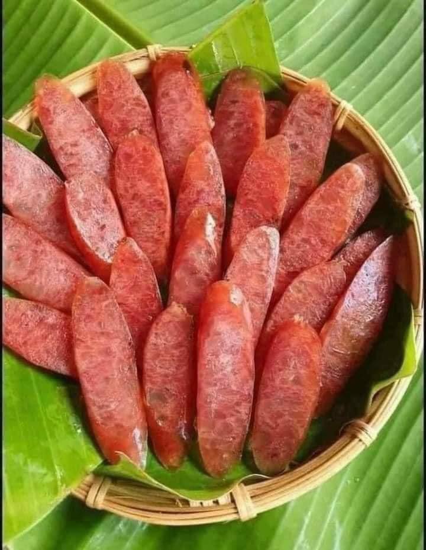
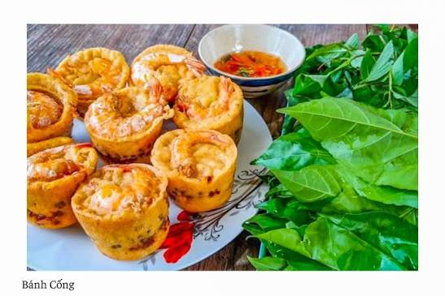

Sóc Trăng là một tỉnh thuộc vùng Đồng bằng sông Cửu Long, nằm ở hạ lưu sông Hậu và có đường bờ biển dài khoảng 72 km. Đây là vùng đất có sự giao thoa văn hóa của ba dân tộc Kinh, Khmer và Hoa, tạo nên bản sắc văn hóa đa dạng và độc đáo. Bên cạnh thế mạnh về sản xuất lúa gạo, nuôi trồng thủy sản và kinh tế biển, Sóc Trăng còn nổi tiếng với nhiều công trình kiến trúc tâm linh, lễ hội truyền thống và nền ẩm thực đặc sắc. Đến với Sóc Trăng, du khách có thể tham quan các địa danh nổi tiếng như Chùa Som Rong, Chùa Dơi, Chùa Chén Kiểu, Chợ nổi Ngã Năm và nhiều khu du lịch sinh thái hấp dẫn. Các lễ hội như Oóc Om Bóc và đua ghe Ngo hằng năm cũng thu hút đông đảo du khách trong và ngoài nước.

Bánh truyền thống nổi tiếng của Sóc Trăng.

Đậm đà hương vị, được nhiều du khách yêu thích.

Món ăn dân dã đặc trưng của người Sóc Trăng.
Website được xây dựng nhằm quảng bá các đặc sản nổi tiếng của tỉnh Sóc Trăng đến người tiêu dùng trong và ngoài nước, đồng thời hỗ trợ khách hàng dễ dàng tìm hiểu thông tin và mua sắm các sản phẩm đặc sản chất lượng với giá cả hợp lý.